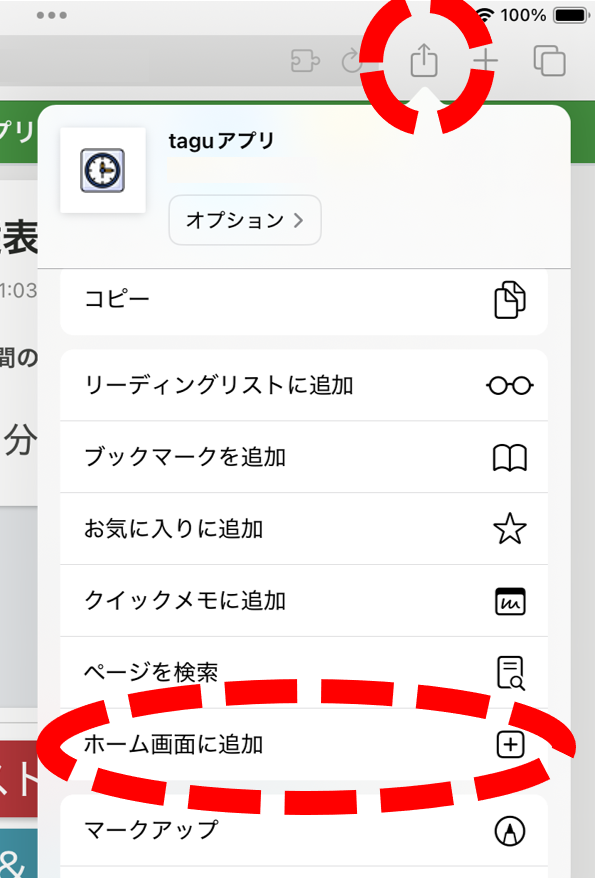
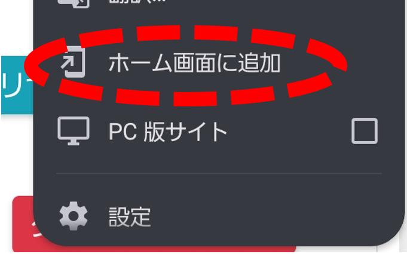
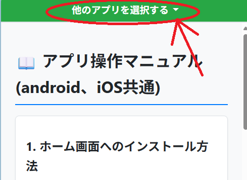
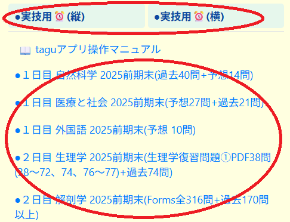
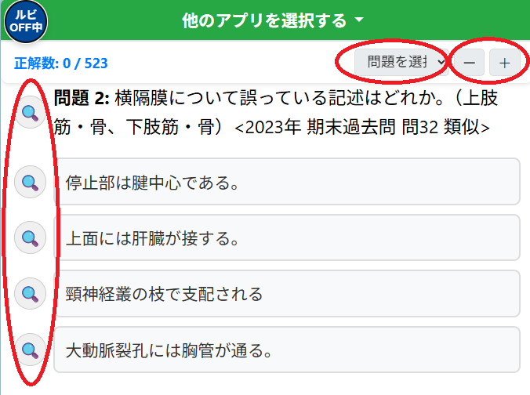
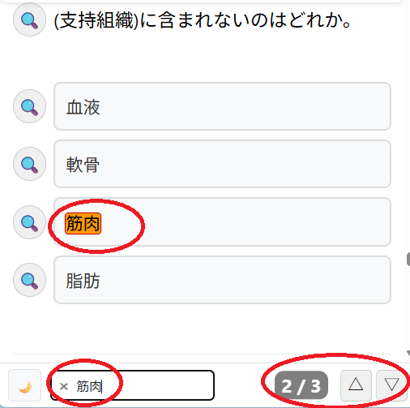
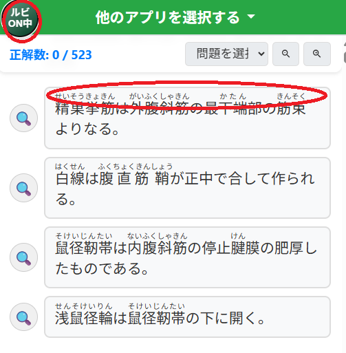
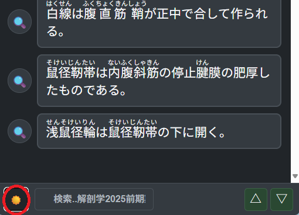

📖 アプリ操作マニュアル(iOS、Android共通)
この [taguアプリ] をこれから利用いただく夜間部の関係者の皆様へ😄
・[taguアプリ] はスマホ専用のクイズアプリです。
・2025年前期期末テスト対策用に昼間部(1年生)へ共有していました。今後は復習用にご利用いただければ幸いです😃
・この先、本アプリの更新(※次回の中間・期末テスト問題の追加など)はすべて未定です m(_ _)m
[2025年10月1日 記 開発 田口]
1. ホーム画面へのインストール方法
このアプリはスマートフォンのホーム画面に追加することで、通常のアプリのように素早く起動できます。
なお、ホーム画面に追加する前にお試しでこのアプリを使ってみる場合は、
本画面上部の【他のアプリを選択する】をタップして
各クイズを選択して事前に動作確認をすることも可能です。
以下から先は各スマートフォンのホーム画面に追加する方法です。
【iOS (iPhone/iPad) でホーム画面へインストールする場合】
- Safariでアプリのページを開きます。
- 画面下部にある共有アイコン（四角から矢印が飛び出したマーク）をタップします。
- メニューをスクロールし、「ホーム画面に追加」を選択します。
- 「追加」をタップすると、ホーム画面にアプリアイコンが作成されます。

【Android でホーム画面へインストールする場合】
- Chromeでアプリのページを開きます。
- 画面右上のメニューボタン（︙）をタップします。
- メニューから「アプリをインストール」または「ホーム画面に追加」を選択します。
- 確認画面で「インストール」または「追加」をタップすると、ホーム画面にアプリアイコンが作成されます。

2. 基本画面構成
画面は上部の「アプリ選択メニュー」とその下の「コンテンツ表示エリア」で構成されています。【他のアプリを選択する】をタップすると、利用できるアプリの一覧が開きます。

3. アプリの選択
メニューを開くと学習に使用するアプリを選択できます。
- タイマーアプリ (縦/横) ⏰: 実技試験などを想定したタイマーです。スマートフォンの向きに合わせて縦画面用・横画面用を使い分けられます。
- クイズアプリ: 各科目のクイズを解くことができます。リストから学習したいクイズを選択してください。
なお、他のクイズを選択すると現在回答中のクイズでの選択肢は未選択状態に戻りますので注意してください！

4. クイズページの操作
クイズページには学習を補助する便利な機能があります。
- ① 問題ジャンプ: 問題番号の範囲を選択すると、その問題グループの先頭まですばやく移動できます。
- ② 文字サイズ変更: 問題ジャンプの右隣にある「＋」「－」ボタンで問題文や選択肢の文字サイズを読みやすい大きさに調整できます。
- ③ Google検索: 問題文や選択肢の横にある虫眼鏡アイコン（🔍）をタップすると、その内容をGoogleで検索できます。新しいタブまたはウィンドウで検索結果が表示されます。
なお、問題文をGoogleで検索した際のAIの回答結果は選択肢の正答と異なる場合があるので注意してください！（その場合、選択肢側の正答が正しいです）

5. 画面内検索機能
画面下部のフッターにある検索ボックスにキーワードを入力すると、表示されているコンテンツ内を検索できます。
- 文字入力: 入力中に一致する単語がハイライトされます。スマートフォンの決定キーか画面内の▽ボタンで、検索ヒット箇所へ移動します。
- スマホの決定キー / ▽ボタン: 次の検索ヒット箇所へ移動します。
- △ボタン: 前のヒット箇所へ移動します。
- ×ボタン: 検索キーワードをクリアし、ハイライトを解除します。

6. ルビ（ふりがな）表示機能
クイズページ表示中、画面左上に表示される丸い「ルビON/OFF」ボタンを押すことで、問題文や選択肢に含まれる専門用語のふりがな表示を切り替えられます。

7. ダークモード
フッター左下の月（🌙）/太陽（☀️）ボタンを押すことで、画面の配色をライトモードとダークモードで切り替えることができます。

注意！）アプリの調子・動きが悪かったり画面に上記までの機能が正常に表示されていないときは、スマホではなく本アプリだけを再起動してみてください。正常に戻ります。